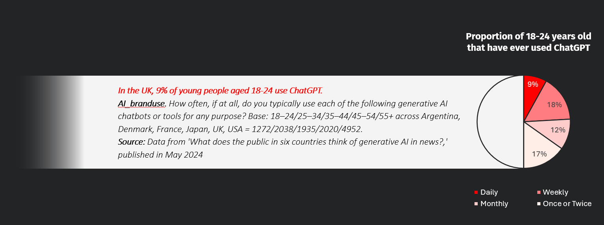
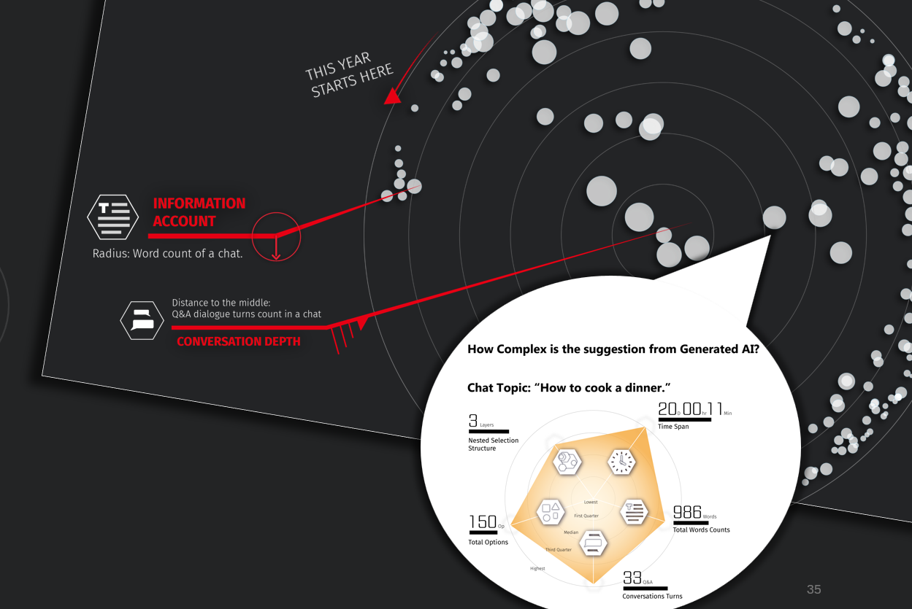
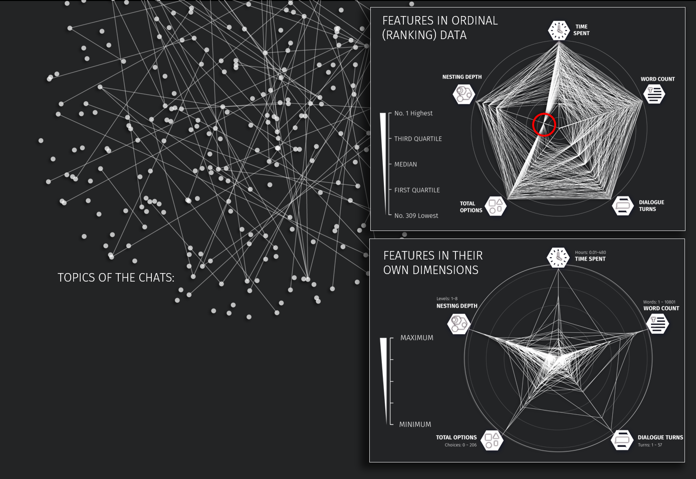
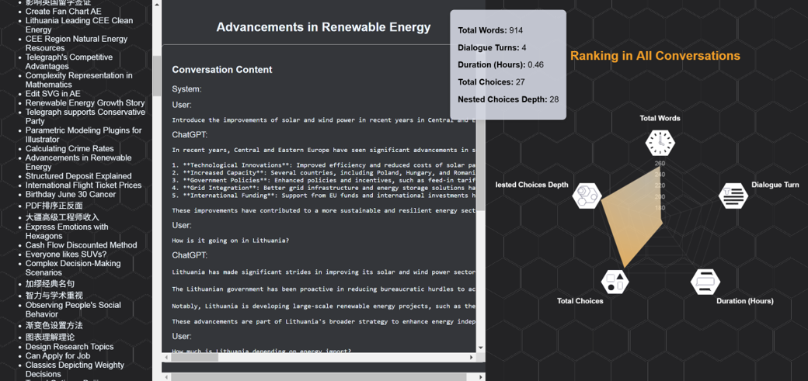

A Year of A Heavy User of Generated AI
UX Research / Personal Project / 2024
This is the second part of my Final Major Project for the Master Degree in Design for Data Visualization, including posters and an interactive prototype. For the design research part, please visit: Decision Making with AI
Intervention of AI in Human Decision-Making Behaviors
Generative AI products are rapidly infiltrating people's work and daily lives, gradually limiting and even replacing human roles in decision-making. Concerns are that AI is minimizing our autonomous role, replacing our choices with its choices.
This includes myself: over the past year, the number of words I exchanged with ChatGPT was 177,784, which is a chilling figure for someone typically quite reticent. Thus, I conducted design research on generative AI-assisted decision making from the perspective of data humanism, attempting to arouse people's attention to their own decision-making behaviors through visualization of chatting history with ChatGPT. [Lupi G., 2017, Data Humanism]

Therefore, this project began with my hesitation facing the intervention of generative AI in people’s daily decision-making behavior. Therefore, the first step was to define the underlying knowledge and concepts necessary for understanding decision-making.
This project is designed for young people aged from 18 to 24 who had exposed to generated AI the most, including an interactive prototype that can calculate the conversations history data from ChatGPT into radar charts of feature data of the conversation content, and a series of posters providing multiple perspectives into the dataset from different abstraction layers. Through the exhibition, It is expected to raise critical thinking on this social phenomenon, and on the behaviors of the audience themselves.
Exhibition Posters
The series of posters were designed along the story of “One Year of Consulting ChatGPT When Making Decisions“. The visual is constructed geometrically with hexagons and circles, represent the contradiction between the 2 abstraction layers: dialogue interface and algorithms.

A GENERAL LOOK AT THE STORY: The word counts, dialogue turns and the time order of all conversations in a year arranged on a circular dot pot. This poster aims to impress the audience with “the huge amount of information I got from Generated AI”.
A DETAILED LOOK INTO SPECIFIC CONVERSATION(S): Then, a radar chart will explain what the features of information I got in a chat is.

TOPICS OF CONVERSATIONS: Connecting the topics from each others according to their similarity. It turns out to contain limited useful information, or just over-complicated to read.
RADAR CHARTS OF ALL CONVERSATIONS: Then, to find useful information, another two radar charts were created based on two methods: presenting the original data with dimensions(Figure right bottom), or re-list them according to their ranks in all conversations(Figure right top). Obvious characteristics can be noticed from these charts. For example: “most of the conversations do not have a topic with a depth in nesting structure but still can be very complex that spent me hours.”

Posters group provides a detailed look into the data:
- Chat Sample-What to cook for a dinner;
- Correlations-What troubles me the most; (Appendix p44)
- Chat Comparison-Clothing suggestions;
- Two Word Clouds attached.
Exhibition Posters
The prototype were designed on the logic that summarized from the whole research (Figures top) in responses to the negative feelings that came from making difficult decisions.

And to evaluate this project, it was also packed with a questionnaire that expects responses from the below two aspects:
- How much information the audience can receive effectively through data visualized in this way?
- What would be the responses of audience having a better understanding of their own behaviors?
Notice
For full content, please contact me via e-mail.